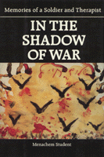

<body bgcolor="#FFFFFF" text="#000000" link="#0000FF" vlink="#CC0000" alink="#CC0000"><center><hr width="350" size="1" align="center" noshade>Evocative accounts of talks between the author and his patients, as well as his own memories<hr width="350" size="1" align="center" noshade><p><a href="https://cdcshoppingcart.uchicago.edu/Cart/ChicagoBook.aspx?ISBN=9780877227892&&PRESS=temple" target="_top">Buy this book!</a> | <a href="https://cdcshoppingcart.uchicago.edu/Cart/Cart.aspx?PRESS=temple" target="_top">View Cart</a> | <a href="https://cdcshoppingcart.uchicago.edu/Cart/Cart.aspx?PRESS=temple" target="_top">Check Out</a></p><p></p></center><!--none//--><h1>In the Shadow of War</h1>
<H2>Memories of a Soldier and Therapist</H2>
<h3>Menachem Student, foreword by Terry A. Kupers</h3>
<P>cloth 0-87722-789-6 $24.50, Feb 91, <FONT COLOR=#990033>Out of Stock Unavailable</FONT>
<BR> 192 pp
</P><BLOCKQUOTE><I>"Absolutely gripping, full of heart and soul.... [Student] presents reality to the reader in a new light, and consequently there is a political effect. This man also has magic as a clinician&#151I felt more passionate about my work in the consulting room while I was reading this book. To the clinician and to all those who are concerned about the situation in the Middle East, Student speaks with eloquence of what often seem to be imponderable aspects of the human condition."</I>
<br>&#151<b>Terry A. Kupers</b>, M.D., in his Foreword<I></I></BLOCKQUOTE>
<p>Menachem Student was a special unit soldier in four Israeli wars. As a clinical psychologist since 1976, he has been confronted continuously with the psychological aftermath of these wars. In these painfully evocative accounts of talks between the author and his patients and memories of his own experience, the split reality of Israeli life&#151the hell of war and the insecure peace of home and family&#151is revealed in all its horror, emptiness, and tragedy. In working with soldiers, widows, orphans, and other wounded of Israel�s wars, the author sees intense loneliness as one of the major feelings people experience. Unlike traditional psychotherapists, his solution is involvement, and the empathy he exhibits in these vivid sessions shows the "processing of pain" by both therapist and patient.
<p>The stories here give an impressionistic understanding of what people bring with them from the battlefield: the soldier father who refuses to participate in normal generational "combat" with his adolescent son; the artist/artillery commander who can no longer paint after returning from the Golan Heights where most of his units were blown to pieces; the soldier returning to his "pioneer" parents who cannot understand their son�s emptiness and alienation; the fourth-grader who threatens suicide a year after his father, a high ranking commander pilot, is killed in a training exercise; the widow who, after "functioning properly" for two years, has no energy to go on with her life or to address the anger she feels. The different episodes emphasize how, for each patient, the "war has hollowed out a desolate central core which, sooner or later, threatens each of its victims with an inability to function, with a breakdown in relatedness."
Describing his own experience in the Yom Kippur war, Student observes that �going home for a vacation from reserve duty was always hard for me. , , I could not bridge the two different realities. I felt like a traitor for taking a hot shower, or eating a full pot of fresh strawberries in the middle of the night.�
The author believes that the pain described here is not exclusive to the people of Israel, but is a pain shared by all people dealing with irrational conflict. Americans will recognize in these stories the trauma of war that Vietnam veterans continue to suffer. Student believes the price for the ongoing process of war is an emotional burden that has become an epidemic throughout Israel. Grappling with the existential issue of loneliness, the fear of death, and emptiness in his clients and in himself, the author concludes that �war can never, by itself, lead to lasting peace. Nor can peace ever heal the wounds war inflicts. Perhaps by calling upon the madnesses of war and peace, by undergoing the transformations each new crossing demands, and uniting them in some way, we may achieve peace and sanity.�
<BR>&nbsp;<h2>Contents</h2><P>
<p>Foreword &#150 Terry A. Kupers, M.D.
<br>Preface
<br>Acknowledgments
<br>1. Pentothal Treatment
<br>2. The Iranian Shoemaker
<br>3. Squadron Commander
<br>4. The Ephod
<br>5. Amnon
<br>6. Yom Kippur War / The First Vacation
<br>7. Going to the Lebanon War / June 1982
<br>8. Debrah
<br>9. Guidance
<br>10. A Professional Orientation Meeting
<br>11. Timmy Wants to Jump
<br>12. Rami
<br>13. The Lost Potential / Meeting Ghosts
<br>14. Pistol in the Drawer
<br>15. The Swamp / I Want to Die
<br>16. Friday Night Celebration
<br>17. Son / Daughter of Holocaust Survivors
<br>18. Reunion / Have You Killed Arabs?
<br>19. The Refusenik
<br>20. Brown Envelopes with Triangular Purple Stamps
<br>21. Organizations Work / The Psychiatrists
<br>22. The Dream
<br>Epilogue
<br>About the Author
</P><BR>&nbsp;<H2>About the Author(s)</H2>
<P><b>Menachem Student</b> is a psychotherapist and organizational consultant currently living in Boston.</P>
<BR><H2>Subject Categories</H2>
<p><A HREF="/tempress/general.html" TARGET="_top">General Interest</a>
<BR><A HREF="/tempress/psycho.html" TARGET="_top">Psychology</a>
<BR><A HREF="/tempress/history.html" TARGET="_top">History</a>
</p>
<p align="center"><a href="https://cdcshoppingcart.uchicago.edu/Cart/ChicagoBook.aspx?ISBN=9780877227892&&PRESS=temple" target="_top">Buy this book!</a> | <a href="https://cdcshoppingcart.uchicago.edu/Cart/Cart.aspx?PRESS=temple" target="_top">View Cart</a> | <a href="https://cdcshoppingcart.uchicago.edu/Cart/Cart.aspx?PRESS=temple" target="_top">Check Out</a></p><p><font face="Arial" size="1"><a href="copyright.html" onMouseOver="window.status='Web Copyright Policy';return true;" onMouseOut="window.status=''" title="Web Copyright Policy">&copy;</a> 2015 <a href="http://www.temple.edu" target="new" onMouseOver="window.status='Link to Temple University home page';return true;" onMouseOut="window.status=''" title="Link to Temple University home page">Temple University</a>. All Rights Reserved. http://www.temple.edu/tempress/titles/796_reg.html</font></p>